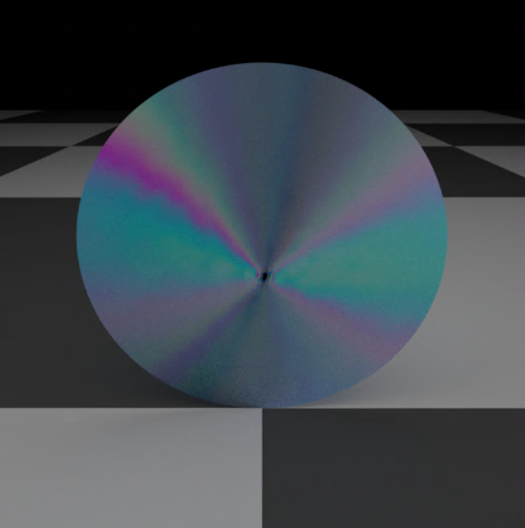
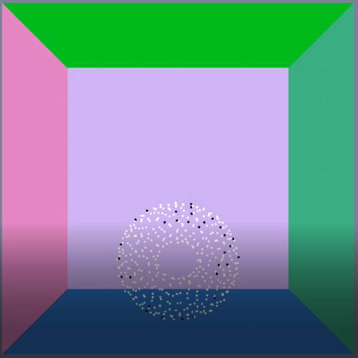

greetings!
I'm Abhinit Sati, a Computer Science PhD student at Boston University advised by Dr. Emily Whiting and co-advised by Dr. Edward Chien. My primary research focus is solving problems in the domain of computational fabrication. Specifically, I work on developing computational methods to improve the efficiency and performance of physical artifacts. Before heading to Boston, I got my Master's degree in Computer Science from Clemson University with a focus on Visual Computing, where I was supervised by Dr. Victor Zordan and Dr. Ioannis Karamouzas. I got my undergraduate degree in Computer Science from University of Mumbai in 2019.
Highlights
-

Real time rendering with ShaderToy
Recursive path tracing, can also produce caustics
-

Volumetric renderer
Rendering volumes with voxel grids, implicit shapes and level sets
Research
-

DIGISEW: Anisotropic Stitching for Variable Stretch in Textiles
Abhinit Sati, Ioannis Karamouzas, Victor Zordan
Paper link PDF -

A system for programming anisotropic physical behavior in cloth fabric
Master's thesis - Document link
Personal Projects
-

Diffraction
Simulating diffraction effects by extending the PBRT source code
-

Rigid Body simulation
Rigid bodies with arbitrary shapes, collisions also supported
-
Microfacet surface effects
Rough diffuse surfaces, rough shiny surfaces, etc. Extensions to the PBRT library